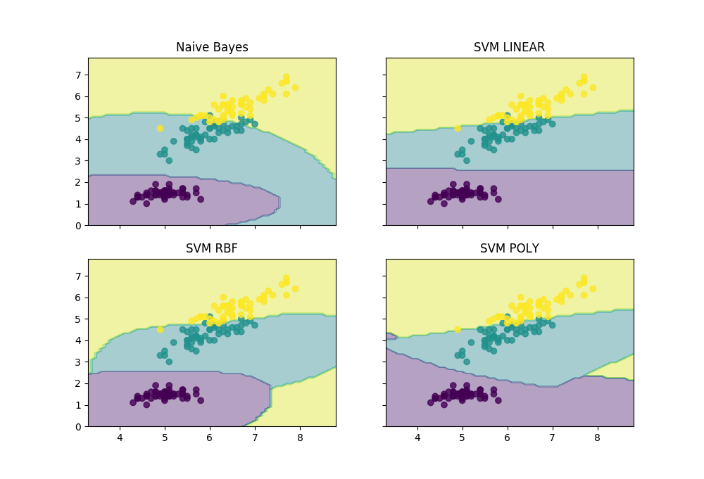
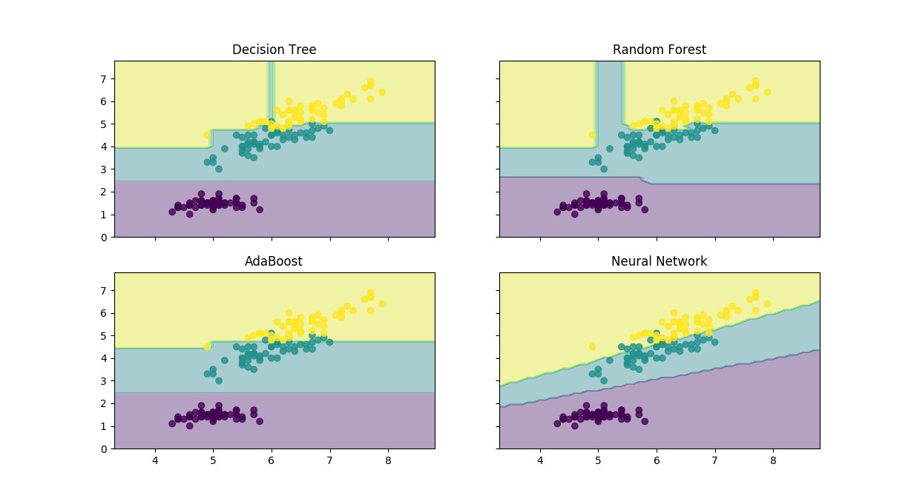

The Iris Dataset consists of 3 different types of irises' (Setosa, Versicolour, and Virginica) petal and sepal length, stored in a 150x4 numpy.ndarray. The rows being the samples and the columns being: Sepal Length, Sepal Width, Petal Length and Petal Width. In this, problem we will be using iris data set for visualising and predicting the outcome of the iris dataset. The models that we are using for the analysis of our problem are Naive Bayes, Support Vector Machines, Decision Tree, Random Forest, AdaBoost and Neural Networks. And all these models are supervised learning models.
The first step is we install our dependencies..
import numpy as np
from sklearn.tree import DecisionTreeClassifier
from sklearn.svm import SVC
from sklearn.ensemble import VotingClassifier
from sklearn.ensemble import AdaBoostClassifier
from sklearn.ensemble import RandomForestClassifier
from sklearn.naive_bayes import GaussianNB
from sklearn.neural_network import MLPClassifier
from sklearn.cross_validation import train_test_split
import pandas as pd
from sklearn.metrics import accuracy_score
Now we write a method to find to know the accuracy of the model. This method is called accuracy takes four arguments. The arguments are type of the model, training dataset, test dataset and features of the dataset. The model is fit with training dataset and the all the predictions are taken by calling the classifier.predict(test_dataset['class'],predictions). Now, all the predictions are comapared with the test dataset and accuracy is calculated.
def accuracy(model,train_dataset,test_dataset,features):
classifier=model
classifier.fit(train_dataset[features],train_dataset['class'])
predictions=classifier.predict(test_dataset[features])
accuracy=accuracy_score(test_dataset['class'],predictions)
return round(accuracy*100,2)
Now we write the main program...
colnames=['sepal-length','sepal-width','petal-length','petal-width','class']
dataset= pd.read_csv('iris.csv', names=colnames, header=None)
train_dataset, test_dataset = train_test_split(dataset, test_size = 0.3)
features=['sepal-length','sepal-width','petal-length','petal-width']
models=[GaussianNB(),SVC(kernel='linear'),SVC(kernel='rbf'),SVC(kernel='poly'),
DecisionTreeClassifier(),RandomForestClassifier(),AdaBoostClassifier(),
MLPClassifier()]
for model in models:
accuracy_value=accuracy(model,train_dataset,test_dataset,features)
print(accuracy_value)
The output changes everytime we run the program. This is because the dataset is split randomly so whenever we run the train dataset and test dataset changes. I got the output as
91.11% for naive Bayes model
95.56% for linear svm model
97.78% for rbf svm model
93.33% for poly svm model
91.11% for decision tree model
93.33% for random forest model
91.11% for adaboost model
97.78% for neural network model
Desicion boundaries of the above models look like
 The iris data set is available at my GitHub account. Click here to visit my GitHub page